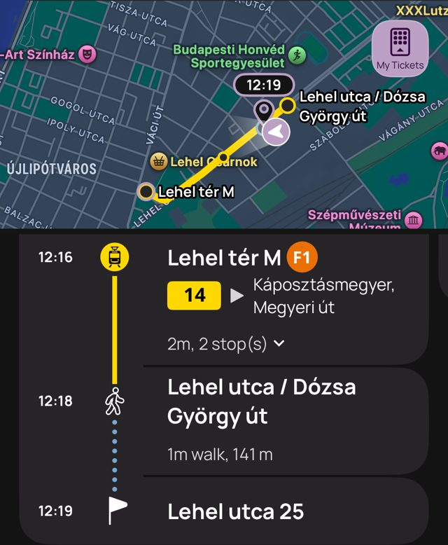

Welcome to Budapest! 感謝你選擇入住，請花幾分鐘閱讀以下內容，讓大家都有愉快的體驗。
入住 Check-in：15:00 後
退房 Check-out：11:00 前
如需延後退房或寄放行李，請事先詢問。如需於 22:00 – 00:00 間入住，酌收延遲入住費新台幣 600 元；00:00 後原則上恕無法協助入住（亦不因此退費），若有特殊需求請務必於預訂前與房東討論評估。退房後請鎖上大門，並將鑰匙投入大門與電梯之間的 401 號信箱。
因為是在自己家中接待，我們希望先稍微認識彼此，也讓雙方都安心，所以入住前會請每位房客配合簡單的身分確認：
您提供的證件照片及聯絡資訊僅用於確認身分及處理突發狀況；若退房後有要事聯繫，且無法透過先前的聯絡管道聯繫上您，也會使用。如無上述需求，我會於退房後 3 天內刪除。
如不方便提供，由於無法完成簡易身份確認，很遺憾我們將無法接待您，已預付訂金者，訂金將全額退還。
回收物品請投入玄關門口的紙箱，其餘一般垃圾請投入垃圾桶；廚餘請投入指定位置。
扣除訂金後的房費餘款請於入住當天以轉帳結清；房客因個人因素提前退房，剩餘房費不予退還。
| 房客取消時間 | 訂金 |
|---|---|
| 入住前 14 天（含）以前 | 全額退還 |
| 入住前 8–14 天 | 退還 50% |
| 入住前 7 天內 | 不予退還 |
訂金全額退還，並於取消通知日起 3 個日曆天內退款。若為入住前 14 天內臨時取消，另協助提供替代住宿的建議與聯絡資訊（不含差價補貼），或提供下次住宿折扣。如因房客未完成身份確認或違反住宿規則而取消，則不適用上述補償。
搭地鐵藍線 M3 到 Lehel tér 站，出站換搭 14 號黃色路面電車（往 Káposztásmegyer），搭 2 站後於「Lehel utca / Dózsa György út」下車，再步行約 3 分鐘即達。

虛線＝從路面電車站步行回家約 3 分鐘；灰色為道路。位置與道路走向均為概略、非實際比例；公車路線與站牌位置請以 BudapestGO 為準。
| út | road（大道、道路） | Váci út、Dózsa György út |
| utca | street（街） | Lehel utca |
| tér | square（廣場） | Lehel tér |
| tere | tér 加上「…的」的變化形，接在人名或名稱後面，意思同樣是 square（…廣場） | Örs vezér tere（Örs vezér 廣場） |
| csarnok | market hall（市場大廳） | Lehel Csarnok |
| pályaudvar | railway station（火車站） | Nyugati pályaudvar |
搭 200E 巴士，換地鐵藍線 M3：
步行到 Népliget 站（M3 藍線），搭往 Újpest-Központ 方向，其餘同上（小行李到 Lehel tér 換 14 號路面電車；大行李到 Dózsa György út 換 75 或 79 號公車）。
| 類型 | 地點 | 前往方式 |
|---|---|---|
| 菜市場 | Lehel MarketVáci út 9-15, 1134 | 步行約 10 分鐘，或搭 14 號路面電車 |
| 藥局 | Benue Lehel PharmacyVáci út 9-15, 1134 位於 Lehel Market 2F（當地標示為 0 樓） | 同 Lehel Market |
| 超市 | LidlVictor Hugo u. 11-15, 1132 | 搭 14 號黃色路面電車 |
| 超市 | City SPARVáci út 37, 1134（Pepco 附近） | 搭 81 號紅色公車 |
| 美妝生活用品店 | dmVáci út 35, 1134（Pepco 旁） | 搭 81 號紅色公車 |
| 生活用品 | PepcoVáci út 35, 1134 | 搭 81 號紅色公車 |
| 家具家居 | IKEAÖrs vezér tere 22, 1148 | 搭 81 號紅色公車，步行 2 分鐘 |
| 家具家居 | JYSKVéső u. 11, 1133 | 搭 79 號紅色公車，步行 5 分鐘 |
| 商場 | WestendVáci út 1-3, 1062 | 搭 14 號路面電車，再步行 10 分鐘 |
| 運動／皮拉提斯教室 | Nordvital Yoga & Pilates StudioNyugati tér 4, 1132 | 搭 M3 地鐵到 Nyugati 站，步行約 2 分鐘 |
| 美妝生活用品店 | dm、Rossmann |
| 平價生活用品服飾 | Pepco |
| 超市 | SPAR |
| 美食街 | Simon's Burger、Popeyes、KFC、McDonald's |
| 電器用品 | MediaMarktVáci út 3, 1062 |
| 電影院 | Cinema CityVáci út 1-3, 1062 |
| 電信公司 | Telekom、One |
| 服飾店 | H&M、Zara、Pull & Bear 等 |
| 鞋店 | Deichmann、CCC |
營業時間請以 Google Maps 為準；部分店家週日可能休息或提早打烊。
點地點名稱可開啟 Google 地圖。營業時間、票價與公休日常有變動，請以官網或 Google 地圖為準。
| 匈牙利語 | 意思 | 發音（參考） |
|---|---|---|
| Szia! | 嗨！／再見！（朋友、熟人，輕鬆場合） | SEE-yaw |
| Jó reggelt! | 早安 | yoh REG-gelt |
| Jó napot! | 您好／午安（對店員、陌生人，較禮貌） | yoh NAH-pot |
| Köszönöm! | 謝謝 | KUH-suh-nuhm |
| Elnézést! | 不好意思／借過 | EL-nay-zaysht |
發音為近似的英文拼音，實際發音可多聽聽當地人怎麼說。